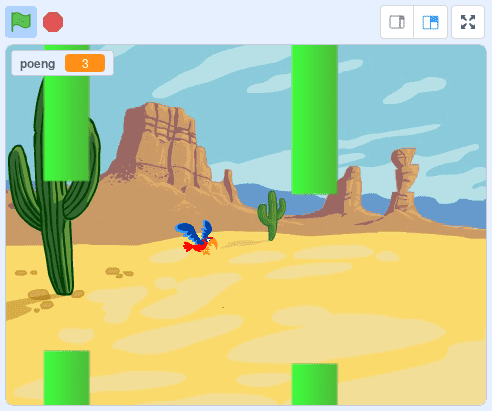
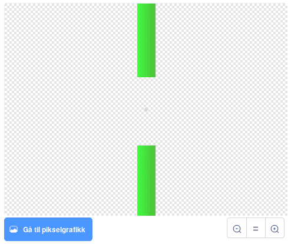

Nå skal vi lage vår egen versjon av spillet Flappy Bird. Du styrer
fuglen Flakse ved å trykke på mellomromtasten for å flakse med
vingene. Du må holde Flakse flyvende og prøve å styre mellom rørene!

Steg 1: Få Flakse til å falle
Vi begynner enkelt, ved å introdusere Flakse og få ham til å falle.
Sjekkliste
når grønt flagg klikkes
gå til x: (-50) y: (0)
for alltid
endre y med (-3)
slutt
Test prosjektet
Klikk det grønne flagget.
Steg 2: Få Flakse til å fly
Nå vil vi at Flakse skal fly oppover når du trykker mellomromtasten.
Sjekkliste
Når [mellomrom v] trykkes
bytt drakt til [Vinger ned v]
gjenta (10) ganger
endre y med (6)
slutt
bytt drakt til [Vinger opp v]
gjenta (10) ganger
endre y med (6)
slutt
Test prosjektet
Klikk det grønne flagget.
Steg 3: Gjør kontrollen bedre
Vi vil at Flakse skal reagere hver gang vi trykker mellomrom. Men når
vi trykker mellomrom så starter to løkker etter hverandre. Hvis vi
trykker mellomrom før disse to løkkene er ferdig så skjer det ikke
noe. For å løse dette problemet skal vi bruke en variabel til å telle
hvor mange flaks vi trenger å gjøre.
Sjekkliste
når grønt flagg klikkes
sett [flaks v] til [0]
bytt drakt til [Vinger opp v]
for alltid
gjenta til <(flaks) = [0]>
endre [flaks v] med (-1)
bytt drakt til [Vinger ned v]
gjenta (10) ganger
endre y med (6)
slutt
bytt drakt til [Vinger opp v]
gjenta (10) ganger
endre y med (6)
slutt
slutt
slutt
når [mellomrom v] trykkes
endre [flaks v] med (1)
Test prosjektet
Klikk det grønne flagget.
Steg 4: Legg til rørene
Vi vil legge til noen hindringer som Flakse kan fly igjennom.
Sjekkliste

Steg 5: Få rørene til å bevege seg
Nå skal vi få rørene til å flytte seg og gjøre høyden tilfeldig slik
at vi får en hinderløype til Flakse.
Sjekkliste
når grønt flagg klikkes
skjul
sett størrelse til (200)%
for alltid
lag klon av [meg v]
vent (2) sekunder
slutt
når jeg starter som klon
gå til x: (240) y: (tilfeldig tall fra (-80) til (80))
vis
gjenta (120) ganger
endre x med (-4)
slutt
slett denne klonen
Test prosjektet
Klikk det grønne flagget.
Steg 6: Finn ut om Flakse kræsjer med rørene
For at spillet skal bli vanskelig må spilleren styre Flakse gjennom
åpningene mellom rørene uten å komme borti hverken rør eller kanten
av skjermen. Vi skal legge til noen klosser som merker om Flakse
kræsjer.
Sjekkliste
når grønt flagg klikkes
vent til <<berører [kant v]?> eller <berører [Rør v]?>>
spill lyden [screech v]
si [Du tapte!]
send melding [Tap v]
stopp [andre skript i figuren v] :: control
når jeg mottar [Tap v]
stopp [andre skript i figuren v] :: control
Test prosjektet
Klikk det grønne flagget.
Steg 7: Legg til poeng
Spilleren skal score ett poeng hver gang Flakse flyr gjennom en
røråpning.
Sjekkliste
når jeg starter som klon
vent til <(x-posisjon) < ([x-posisjon v] av [Flakse v])>
endre [poeng v] med (1)
spill lyden [bird v]
Test prosjektet
Klikk det grønne flagget.
Lagre prosjektet ditt
Supert, du har laget ferdig din egen enkle versjon av Flappy
Bird-spillet.
Her er noen flere ting du kan prøve:
Utfordring 1: Legg til tyngdekraft
Når noe faller på grunn av tyngdekraft øker farten jo lenger fallet
varer. Vi skal prøve å etterligne denne måten å falle på.
når grønt flagg klikkes
sett [løft v] til [0]
gå til x: (-50) y: (0)
for alltid
endre y med (løft)
endre [løft v] med (-0.2)
slutt
når grønt flagg klikkes
sett [flaks v] til [0]
bytt drakt til [Vinger opp v]
for alltid
gjenta til <(flaks) = [0]>
endre [flaks v] med (-1)
bytt drakt til [Vinger ned v]
endre [løft v] med (4)
vent (0.1) sekunder
bytt drakt til [Vinger opp v]
vent (0.1) sekunder
slutt
slutt
Test prosjektet
Klikk det grønne flagget.
Utfordring 2: Fall ut av skjermen
Når spilleren taper vil vi at Flakse faller ned og ut av skjermen.
når jeg mottar [Fall v]
for alltid
vend høyre (5) grader
slutt
når jeg mottar [Fall v]
gjenta til <(y-posisjon) < [-180]>
endre y med (løft)
endre [løft v] med (-0.2)
slutt
skjul
send melding [Tap v]
stopp [andre skript i figuren v] :: control
Test prosjektet
Klikk det grønne flagget.
Utfordring 3: Legg til rekorder
når jeg mottar [Tap v]
hvis <(poeng) > (Rekord)>
sett [Rekord v] til (poeng)
slutt
stopp [andre skript i figuren v] :: control
Nettvariabler
Nettvariabler gir deg muligheten til å huske ting mellom forskjellige
brukere og forskjellige kjøringer av spillet ditt (i motsetning til
vanlige variabler hvor verdiene blir nullstilt hver gang du trykker
det grønne flagget). Dette er nøyaktig det vi trenger for å huske hva
rekorden i spillet er.
Nettvariabler er fortsatt litt eksperimentelle, og for tiden får ikke
nye brukere av Scratch lov til å lage slike variabler. Hvis du ikke
får lov til å lage en slik variabel må du hoppe over den siste
utfordringen.
Test prosjektet
Klikk det grønne flagget.
Lagre prosjektet ditt
Gratulerer, du er ferdig med spillet! Hva er rekorden din?
Ikke glem å dele spillet med vennene dine. Trykk på Legg ut for at
andre skal få prøve!
Forbedre denne siden
Funnet en feil? Kunne noe vært bedre? Hvis ja, vennligst gi oss tilbakemelding ved å lage en sak på Github eller fiks feilen selv om du kan. Vi er takknemlige for enhver tilbakemelding!